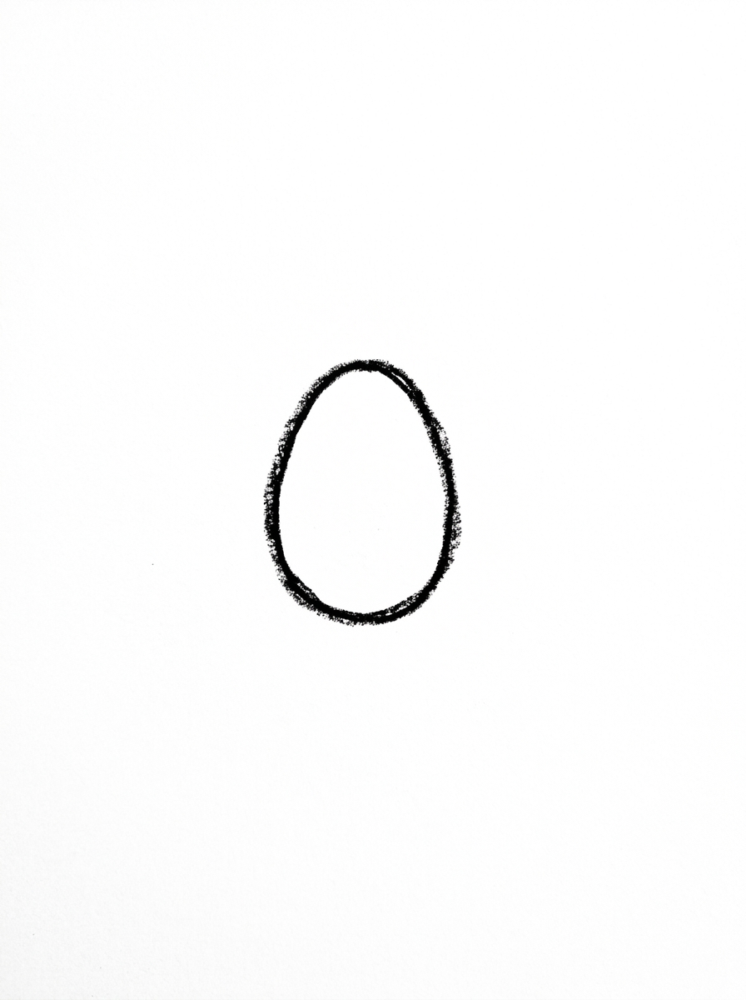
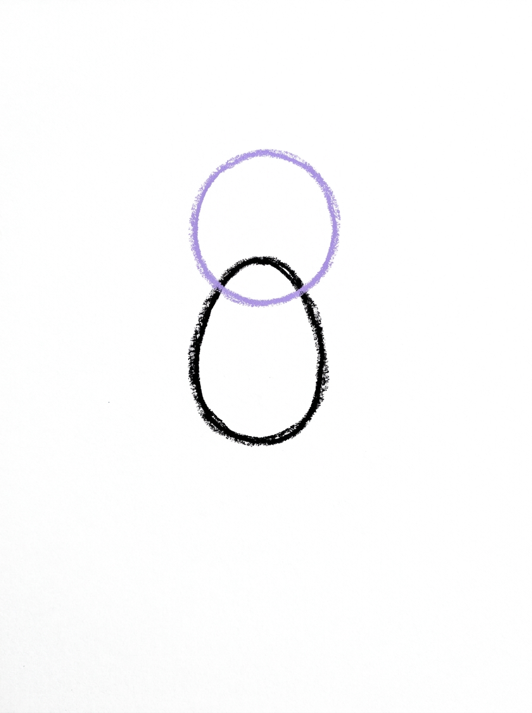
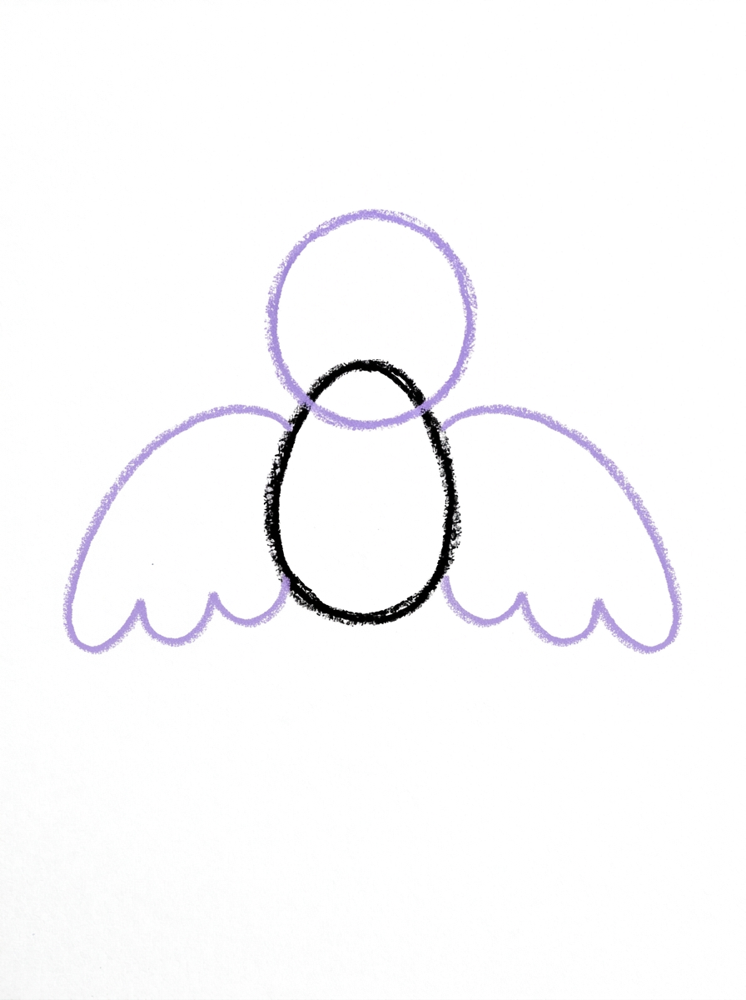
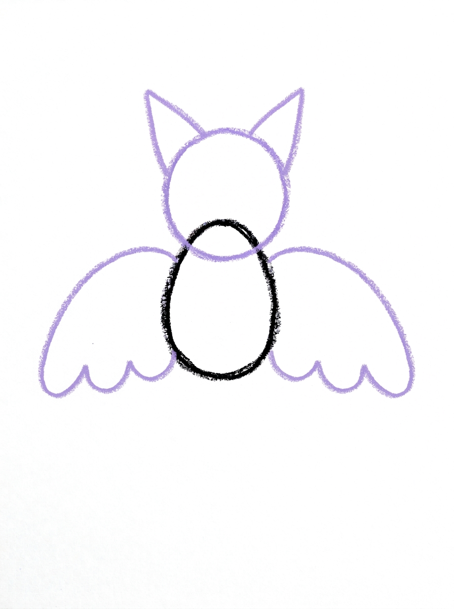
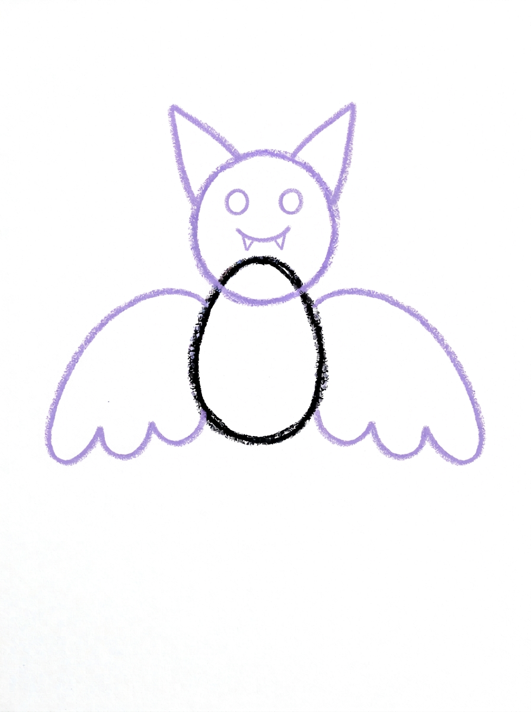

Bat Drawing for Kids How to Draw A Bat in 6 Easy Steps
Quick Answer
Start with a small upright oval body, add a circle head, then two wide wings with three half-circle bumps along each bottom edge. Add two triangle ears, dot eyes and a smile with two tiny fangs, then colour it dark brown. Made for ages 3 and up — no signup needed, just print and draw.
At a Glance
- Subject: How to draw a bat
- Ages: 3+
- Steps: 6 steps
- Time: ~15 min
- Difficulty: Easy
- Supplies: Paper, crayons
This bat is the friendly kind — round body, big wings and a smile with two tiny fangs. Kids love that it looks a little bit spooky and a lot cute at the same time, and it is really just an oval, a circle, two wing shapes and two triangles.
✏️ Draw Your Bat in 6 Easy Steps
One step per box — this step by step bat drawing shows each new part in a different color so kids can see exactly what changed.
Step 1: The Body

Draw one small oval standing up in the middle of your paper. This is your bat's body.
Step 2: The Head

Draw one circle overlapping the top of the body so the two shapes touch. This is your bat's head.
Step 3: The Wings

Draw two wide wing shapes, one on each side of the body. Each wing touches the side of the body and has three half-circle bumps along its bottom edge.
Step 4: The Ears

Draw two pointed triangle ears on top of the head, each one touching the top of the head.
Step 5: The Face and Fangs

Draw two round dot eyes on the head, and one small curved smile line below the eyes with two tiny triangles pointing down from it — those are the bat's fangs!
Step 6: Color It In

Color your bat! Dark brown for the body, head and ears, dark brown for the wings with lighter brown inside, black for the eyes, and white for the fangs. Great drawing!
📊 Bat Drawing by Age
Every age can join in — just adjust the job.
| Age | What they can do | Tip |
|---|---|---|
| 3-4 | Draw the body oval and head circle, and add the dot eyes in Step 5. | The bumpy wing edges are the hard part at this age — draw the wings with them, or let smooth wings be fine for a first bat. |
| 4-5 | Draw the wings with the three half-circle bumps and add the triangle ears. | Count the bumps together — three per wing — and draw one wing, then copy it on the other side like a mirror. |
| 6+ | Draw the full bat including the smile and two tiny fang triangles, and shade the wings two-tone. | Challenge them to hang the bat upside down from a drawn tree branch — bats sleep that way, and kids find it hilarious. |
🖨️ Download Your Free Bat Drawing Printable
The printable lays out all 6 steps one per box, big enough for little hands — kids draw right alongside each step.
⬇️ Open Free Printable 🖨️ Print🎁 Free printable for ages 3+
🦇 Bat Cave Counting
Draw a whole bat cave: use the six steps to draw three or five bats across a big sheet of dark paper, making each new bat a little smaller, as if it is deeper in the cave. Then count together — how many wings, how many ears, how many tiny fangs did the whole cave take? It turns one drawing into a counting game kids ask to repeat.
What You'll Need to Draw A Bat
You need paper, a pencil and crayons or markers. For Step 6 keep dark brown ready for the body, head, ears and wing edges, lighter brown for inside the wings, black for the eyes, and white for the fangs — a white crayon or gel pen makes the fangs pop. Drawing on purple or dark blue paper gives an instant night sky.
What They're Learning
This tutorial practices the upright oval, the circle, and the pointed triangle for the ears and fangs. The wings teach a repeating pattern — three half-circle bumps in a row — and mirroring, since the second wing copies the first on the other side of the body. The face step adds dot placement and one curved smile line.
Make It Yours
After the first bat, try: a tiny baby bat beside it using the same steps smaller, a bat with a smiling pumpkin face for Halloween, wings coloured purple or black instead of brown, or a whole night sky scene with a moon, stars and three bats flying at different heights.
🛒 Our Favorite Drawing Supplies
These are the supplies we reach for in our own home — washable (because kids), quality paper, and enough colors to avoid fights.
As an Amazon Associate, MomYouNeedThis earns from qualifying purchases — at no extra cost to you.
💡 Bat Drawing Tips for Parents
Step 3, the wings, is the step to slow down for. Each wing's bottom edge has three half-circle bumps — draw it like a row of three little hills. If your child draws one wing well, fold the encouragement into symmetry: the second wing is the same drawing flipped, and uneven wings still look like a bat mid-flap.
The fangs in Step 5 are tiny, and tiny triangles frustrate small hands. If the fangs come out as blobs, leave them — once they are coloured white in Step 6 they read as fangs anyway. Praise the smile; a friendly bat is the goal.
✏️ Bat Drawing Step by Step
This bat drawing builds from the middle out: body first, head on top, then the two big wings, ears, and the face details last. Saving the wings for Step 3 means the body is already there to anchor them, so they start from the right place instead of floating.
Follow the printable one step at a time and check each new part against the picture. The steps are ordered so the biggest shapes land first and the tiniest details — two fang triangles — come when the bat already looks like a bat.
Colouring is simple and dramatic: dark brown almost everywhere, lighter brown inside the wings, and one bright white detail for the fangs. Even very young children can do most of the colouring themselves.
See free bat printable for more.
✏️ One Shape Per Step, Six Steps Total
The exact order: Step 1 is one small upright oval for the body. Step 2 adds one circle on top for the head. Step 3 draws the two wide wings, one on each side, each with three half-circle bumps along its bottom edge.
Step 4 puts two pointed triangle ears on top of the head. Step 5 is the face — two round dot eyes, one small curved smile, and two tiny triangles pointing down from the smile as fangs. Step 6 colours it dark brown with white fangs.
Notice the pattern steps: three bumps per wing, two ears, two eyes, two fangs. This tutorial quietly doubles as a counting and matching exercise, which is part of why it holds a preschooler's attention.
See free bat printable for more.
🦇 A Friendly Halloween Bat
For Halloween, this is the bat drawing to reach for: cute enough for a preschool party, bat-like enough to satisfy a kindergartner who wants something spooky. The smile and round body keep it firmly friendly.
Draw a colony of them on orange or purple paper, cut them out, and hang them from a string or a branch for an instant Halloween decoration. Add a crescent moon and a few stars around each bat.
It also pairs nicely with a simple bat fact at drawing time — bats are the only mammals that truly fly, and they sleep hanging upside down. One fact per drawing session is plenty for this age.
See free bat printable for more.
❓ Bat Drawing FAQs
What is the easiest way to draw a bat?
Draw a small upright oval for the body, a circle head on top, and two wide wings with three bumps along each bottom edge. Add triangle ears, dot eyes and a smile with two fangs — this tutorial follows that order in six steps.
What age is this bat drawing for?
It is made for ages 3 and up. Younger children can do the body, head and eyes with help on the bumpy wings, while older kids can draw the fangs and two-tone wing colouring on their own.
What supplies do we need to draw a bat?
Paper, a pencil and crayons or markers are all you need. For Step 6, have dark brown, lighter brown, black and white ready — a white crayon or gel pen helps the fangs stand out.
Is the bat drawing printable really free?
Yes — every printable on MomYouNeedThis is 100% free to download and print. No signup, no payment, just tap the download button.
How do I print the bat drawing tutorial?
Open the PDF and print at 100% scale, not 'fit to page', so all six step pictures print at their designed size. Your child can follow the sheet step by step beside their own paper.
How do I draw the bat's wings so they match?
Draw one wing first with three half-circle bumps along the bottom, then copy it on the other side like a mirror image. Slightly uneven wings are fine — a flying bat's wings are rarely in the same position.
Is this bat too scary for toddlers?
No — this bat has a round body, a smile and tiny fangs, closer to a storybook character than anything spooky. It is designed for preschool Halloween activities and little kids who like bats.
Why does the bat have fangs if it is friendly?
Real bats have small teeth, and the two tiny white fangs are what make this drawing read clearly as a bat instead of a bird or an owl. Keeping them small and paired with a smile keeps the bat cute.
📚 Keep Exploring
- ✏️ All 53 Drawing Tutorials 53 free step-by-step drawing tutorials for kids.
- 🐾 Animal Coloring Free printable animal coloring pages for little learners.
- ✏️ Drawing Practice Free printable drawing pre-writing worksheet for toddlers.